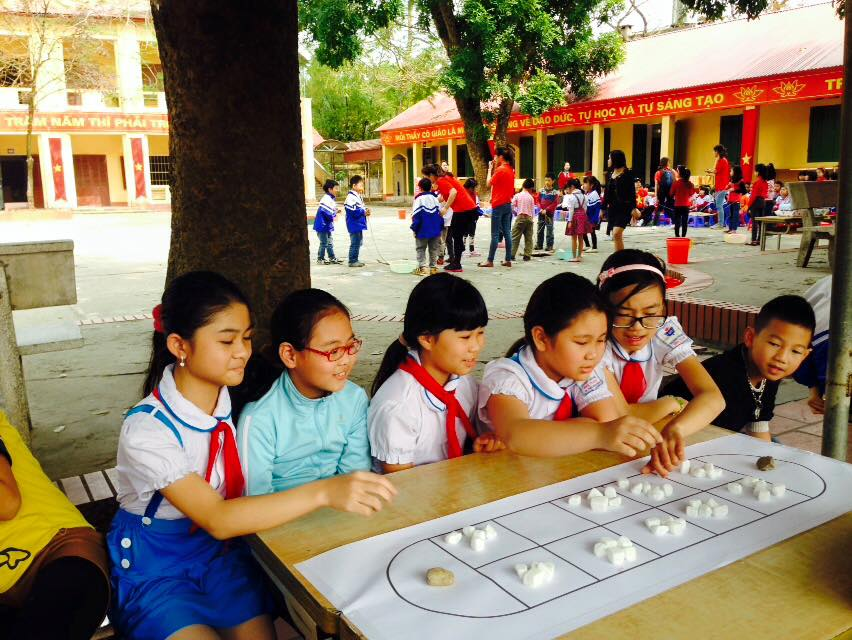
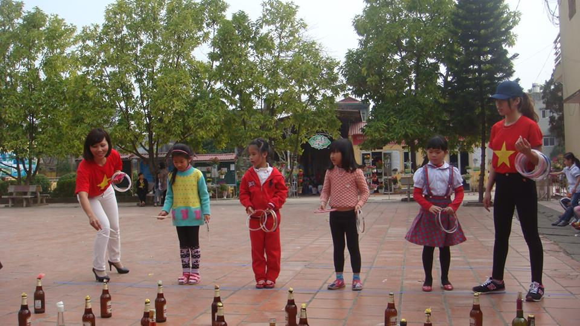
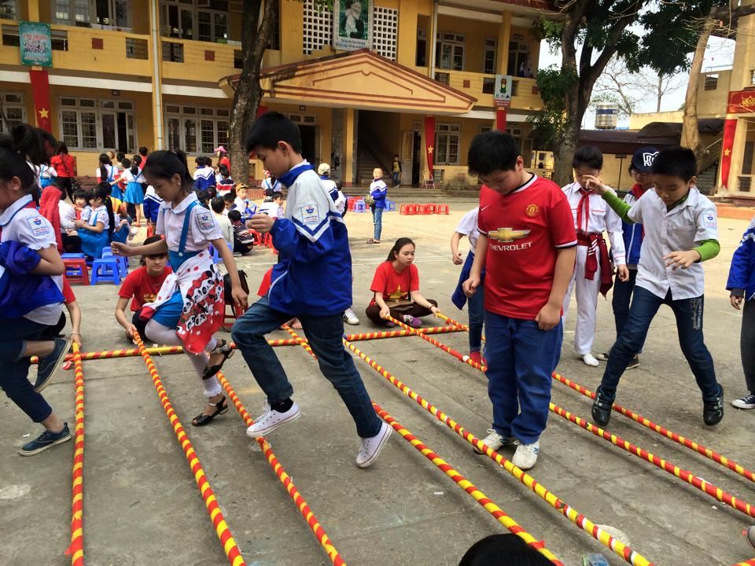
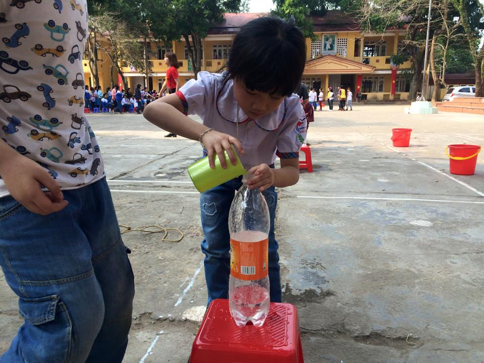

Học sinh trường tiểu học nha trang hào hứng với “ngày hội trò chơi dân gian”
Nằm trong chuỗi các sự kiện chào mừng ngày thành lập Đoàn Thanh niên cộng sản Hồ Chí Minh (26-3), ngày 22/3/2016, chương trình “Ngày hội trò chơi dân gian” đã được Đoàn trường Tiểu học Nha Trang phối kết hợp cùng với bộ phận chuyên môn tổ chức thành công.
Tuy là lần đầu tiên tổ chức chương trình này, nhưng với nội dung hấp dẫn cùng sự nhiệt tình, năng động của đoàn viên thanh niên, “Ngày hội trò chơi dân gian” đã thu hút đông đảo sự tham gia của các thầy cô giáo, đoàn viên thanh niên trong chi đoàn và toàn thể 1180 em học sinh trong toàn trường.
Nội dung chính của chương trình là 8 trò chơi dân gian: Ô ăn quan, chơi chuyền, hai người ba chân, kéo co, bịt mắt đánh trống, tung vòng cổ chai, hợp đồng tác chiến và nhảy sạp thu hút toàn thể học sinh toàn trường tham gia sôi nổi, nhiệt tình. Tuy thời tiết khá nóng nhưng tinh thần “vui hết mình” của người chơi đã khiến những người đến tham gia thực sự phấn khích. Các em học sinh vô cùng háo hức với những trò chơi vốn đã rất quen thuộc như “kéo co”, “bịt mắt đánh trống”… Còn các trò chơi “Ô ăn quan” hay “Chơi chuyền” thực sự đã gây sự tò mò, mong muốn được tìm hiểu và thử sức đối với các em vì đây là các trò chơi lần đầu tiên các em được nghe tên, được học cách chơi và trở thành người chơi chính thức, … Các đội đã “chiến đấu” với tinh thần rất vui vẻ nên các phần thi diễn ra rất sôi động và đem lại nhiều tiếng cười. Không khí dân gian đã được những đoàn viên năng động của trường Tiểu học Nha Trang tái hiện lại một cách rất chân thực và gần gũi.
Những trò chơi không chỉ đem lại niềm vui cho các em học sinh, mà thêm vào đó, một lần nữa chúng ta đã được nhắc nhở về những giá trị truyền thống, những nét văn hóa lâu đời của dân tộc rất đáng được gìn giữ và tôn vinh. “Ngày hội trò chơi dân gian” thực sự là một chương trình rất có ý nghĩa để chào mừng ngày thành lập Đoàn thanh niên cộng sản Hồ Chí Minh (26-3).
Sau đây là một số hình ảnh của “Ngày hội trò chơi dân gian”
Trò chơi "ô ăn quan"

Trò chơi "Tung vòng cổ chai"

"Nhảy sạp"

